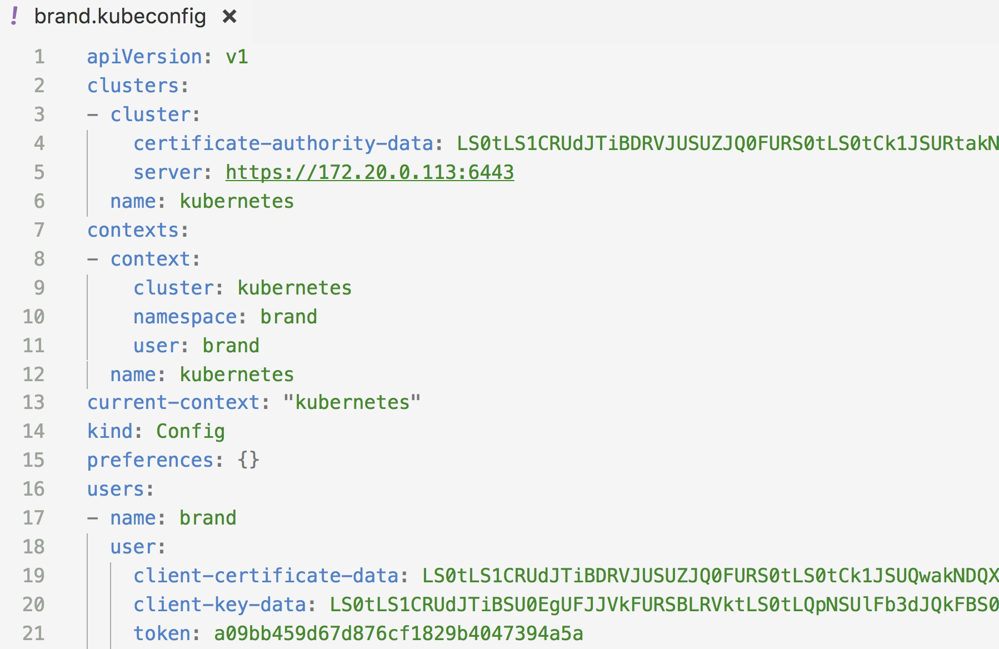

使用 kubeconfig 或 token 进行用户身份认证
Table of Contents
在开启了 TLS 的集群中，每当与集群交互的时候少不了的是身份认证，使用 kubeconfig（即证书） 和 token 两种认证方式是最简单也最通用的认证方式
在 dashboard 的登录功能就可以使用这两种登录功能
下文分两块以示例的方式来讲解两种登陆认证方式：
- 为 brand 命名空间下的 brand 用户创建 kubeconfig 文件
- 为集群的管理员（拥有所有命名空间的 amdin 权限）创建 token
kubeconfig
如何生成kubeconfig文件 请参考 Kubeconfig
注意：生成的 kubeconfig 文件中没有 token 字段，需要手动添加该字段
比如为 brand namespace 下的 brand 用户生成了名为 brand.kubeconfig 的 kubeconfig 文件，还要再该文件中追加一行 token 的配置，如下所示：

对于访问 dashboard 时候的使用 kubeconfig 文件如brand.kubeconfig 必须追到 token 字段，否则认证不会通过 而使用 kubectl 命令时的用的 kubeconfig 文件则不需要包含 token 字段
生成 token
需要创建一个admin用户并授予admin角色绑定，使用下面的yaml文件创建admin用户并赋予他管理员权限，然后可以通过token访问kubernetes，该文件见 https://github.com/rootsongjc/kubernetes-handbook/tree/master/manifests/dashboard-1.7.1/admin-role.yaml
kind: ClusterRoleBinding
apiVersion: rbac.authorization.k8s.io/v1beta1
metadata:
name: admin
annotations:
rbac.authorization.kubernetes.io/autoupdate: "true"
roleRef:
kind: ClusterRole
name: cluster-admin
apiGroup: rbac.authorization.k8s.io
subjects:
- kind: ServiceAccount
name: admin
namespace: kube-system
---
apiVersion: v1
kind: ServiceAccount
metadata:
name: admin
namespace: kube-system
labels:
kubernetes.io/cluster-service: "true"
addonmanager.kubernetes.io/mode: Reconcile
然后执行下面的命令创建 serviceaccount 和角色绑定：
$ kubectl create -f admin-role.yaml
创建完成后获取secret中token的值：
# 获取admin-token的secret名字 $ kubectl -n kube-system get secret|grep admin-token admin-token-nwphb kubernetes.io/service-account-token 3 6m # 获取token的值 $ kubectl -n kube-system describe secret admin-token-nwphb Name: admin-token-nwphb Namespace: kube-system Labels: <none> Annotations: kubernetes.io/service-account.name=admin kubernetes.io/service-account.uid=f37bd044-bfb3-11e7-87c0-f4e9d49f8ed0 Type: kubernetes.io/service-account-token Data ==== namespace: 11 bytes token: 非常长的字符串 ca.crt: 1310 bytes
也可以使用 jsonpath 的方式直接获取 token 的值，如：
$ kubectl -n kube-system get secret admin-token-nwphb -o jsonpath={.data.token}|base64 -d
注意：yaml 输出里的那个 token 值是进行 base64 编码后的结果，一定要将 kubectl 的输出中的 token 值进行 base64 解码 在线解码工具 base64decode Linux 和 Mac 有自带的 base64 命令也可以直接使用，输入 base64 是进行编码，Linux 中base64 -d 表示解码，Mac 中使用 base64 -D
因为 secret 都是经过 base64 编码的，如果直接使用 kubectl 中查看到的 token 值会认证失败。更简单的方式是直接使用kubectl describe命令获取token的内容（经过base64解码之后）：
$ kubectl describe secret admin-token-nwphb
为普通用户生成token
为指定namespace分配该namespace的最高权限，这通常是在为某个用户（组织或者个人）划分了namespace之后，需要给该用户创建token登陆kubernetes dashboard或者调用kubernetes API的时候使用
每次创建了新的namespace下都会生成一个默认的token，名为default-token-xxxx。default就相当于该namespace下的一个用户，可以使用下面的命令给该用户分配该namespace的管理员权限
$ kubectl create rolebinding $ROLEBINDING_NAME --clusterrole=admin --serviceaccount=$NAMESPACE:default --namespace=$NAMESPACE
- $ROLEBINDING_NAME: 必须是该namespace下的唯一的
- admin: 表示用户该namespace的管理员权限
给默认的serviceaccount default分配admin权限，这样就不要再创建新的serviceaccount 当然也可以自己创建新的serviceaccount，然后给它admin权限
| Next：认证策略 | Previous：IP伪装 | Home：安全 |